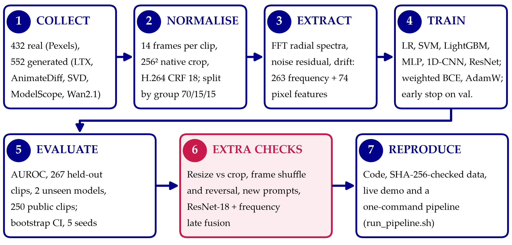
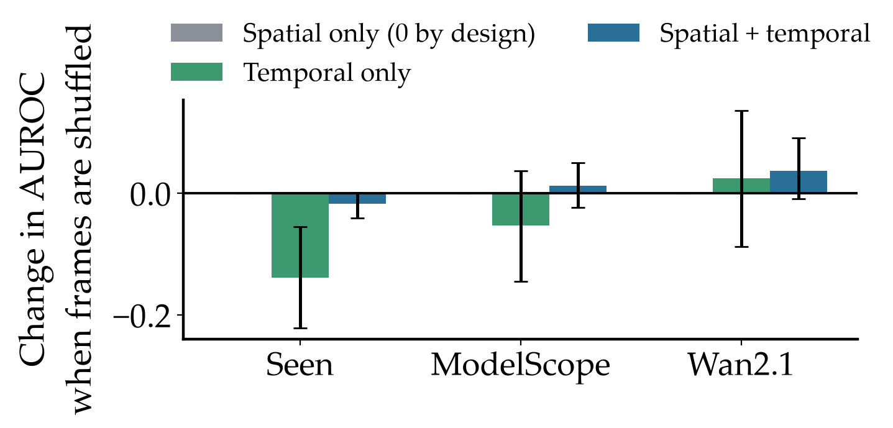
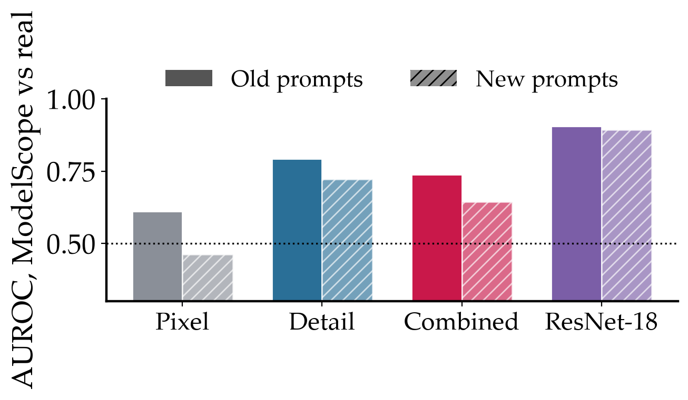
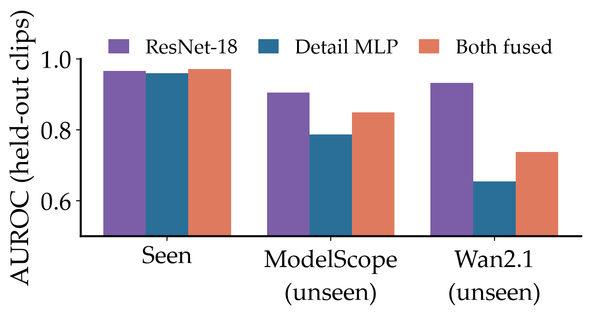
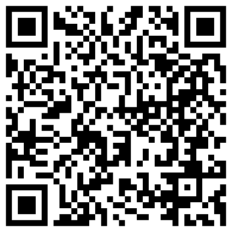
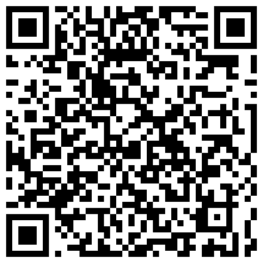

IE643 Course Project
Detection of AI-Generated Video via the Frequency Domain
Team: mdhkideggimirch
Astitva Garg (24B2440)
24b2440@iitb.ac.in
Generative video models (Sora, Veo, Wan) now produce clips that people cannot reliably tell from camera footage. We test whether two cues, the spatial-frequency spectrum of each frame and its frame-to-frame drift, detect diffusion-generated video better than pixel statistics. On a controlled set of 984 clips (432 real, 552 from five generators, two generators held out) we compare pixel, frequency and fused features on identical held-out clips. Frequency cues win on trained generators (AUROC 0.97 vs 0.89) but transfer only partly to new ones.

How to read it. A 2-D FFT turns a frame into a map of how much energy it has at each spatial frequency: the centre is coarse structure (big shapes), the edges are fine detail (texture, noise). Averaging 40 clips and subtracting the real average leaves a generator’s fingerprint: blue = less energy than camera video at that frequency, red = more. The generators differ from real, and from each other (LTX-Video shows a regular dot grid, a periodic artefact that is plausibly from up-sampling). That makes the spectrum a usable signal, and explains why a detector trained on some generators carries over only partly to others.
Figure 2 shows the seven steps, from collecting clips to a reproducible result.

Figure 3 follows one clip through the system: two groups of numbers, A and B, are measured and a small neural network turns them into the chance that the clip is AI-made. Table 1 (right column) lists exactly what is measured.

| Group | # | What is measured |
|---|---|---|
| A fine detail | 226 | Per frame (113 values, then mean and std over frames): radial power spectrum (48 bins); the same for the noise residual (frame minus its 3×3 median, 48 bins); spectral slope; energy share beyond 25/50/75 % of Nyquist; centroid; 85 % roll-off; DCT low/mid/high shares; energy in 8 orientations. |
| B change over time | 37 | L2 and cosine distance between consecutive frames’ radial spectra (mean, std, max, lag-1 autocorrelation); second-order change; low/mid/high-band drift; drift of slope, high-frequency share, centroid, DCT-high; 5 noise-residual features (lag-1 temporal correlation, high-temporal-frequency share, energy, residual-spectrum drift). |
| Control pixels | 74 | Mean and std over frames: HSV histograms (8 bins × 3), luminance mean, std, 5/50/95th percentiles, Sobel gradient mean, std, p95, Laplacian variance, edge density, saturation mean, std; plus mean and std of the frame difference. |
| Source | Train | Val | Test | Total |
|---|---|---|---|---|
| Real (Pexels stock video) | 304 | 63 | 65 | 432 |
| LTX-Video (AI) | 115 | 19 | 17 | 151 |
| AnimateDiff (AI) | 98 | 19 | 13 | 130 |
| Stable Video Diffusion (AI) | 78 | 21 | 16 | 115 |
| ModelScope (AI, test only) | 0 | 0 | 99 | 99 |
| Wan2.1 (AI, test only) | 0 | 0 | 57 | 57 |
| Total | 595 | 122 | 267 | 984 |
Every clip: 14 frames, 256 × 256 pixels, same compression; people and cars filtered out. Extra test: 250 public AI clips (Sora 2, Veo 3, Kling, HunyuanVideo, Wan2). Watch-out: file size alone still separates real from AI a little (AUROC 0.65).
| Question | What we did | What we found |
|---|---|---|
| 1. Does resizing hurt? | Shrank frames instead of cropping. | The fine-detail model loses 0.08; the pixel model does not drop. Resizing weakens the clue. |
| 2. Does it use real motion? | Played frames backwards, then shuffled them. | Backwards: no change. Shuffled: the time-only model loses 0.14 (the combined model 0.02). It relies on real frame-to-frame coherence. |
| 3. Were the new-generator scores fair? | 72 new ModelScope clips from 36 unseen prompts. | The pixel, detail and combined models drop 0.07–0.15: the old scores were too high. Detail still beats pixels (0.72 vs 0.46); only the big network barely moves (0.91 → 0.89). |
| 4. Can our detail help the big network? | Blended our score with ResNet-18’s. | No. It lifts our model (+0.06 to +0.08 on new generators) but not ResNet-18 (+0.00 on trained generators, −0.06 to −0.20 on new ones). |




On the same held-out clips, fine detail beats pixel statistics on trained generators: 0.966 vs 0.889 (5-run means; for the final trained model the paired gap is +0.079, 95 % interval +0.02 to +0.14). On new generators the picture is mixed (Figure 8, Table 3).

| AUROC | Trained-on | ModelScope (new) | Wan2.1 (new) | 250 public |
|---|---|---|---|---|
| Pixel statistics | 0.889 | 0.619 | 0.827 | 0.694 |
| ResNet-18 | 0.954 | 0.900 | 0.926 | 0.781 |
| Ours: detail | 0.966 | 0.798 | 0.690 | 0.727 |
| Ours: combined | 0.977 | 0.744 | 0.819 | 0.754 |
We thank the IE 643 instructor and TAs, Pexels, and the authors of the open generators used here.

